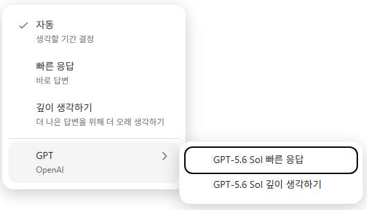

동료들과 함께 나누고 싶은 '나만의 단풍 명소'를 추천해 주세요.
방문하기 좋은 맛집이나 카페, 주변 코스를 함께 적어주시면,
AI가 이를 바탕으로 한눈에 보기 좋은 맞춤형 여행 가이드북으로 만들어 드립니다.
동료들에게 꼭 소개하고 싶은 단풍 명소 한 곳을 고른 후, 추천 이유와 함께 들르기 좋은 주변 맛집이나 카페 등을 적어주세요.
아래에 준비된 프롬프트를 복사해 Copilot에 입력해 보세요.
여러분이 남겨주신 내용이 AI 여행 가이드가 작성한 멋진 단풍 명소 카드로 재탄생합니다.

완성된 가이드 카드를 PlayDay Gallery에 올려 동료들에게 소개해주세요.